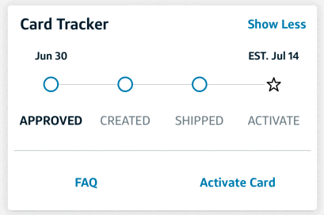
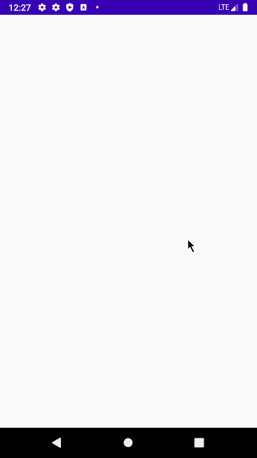

Portfolio
Unity 3D Game: Patrick's Yum Run
* Check out the video walkthrough!

Technologies Used: Unity, C#, 3D Game Development, Blender 3D Modeling
Unity 3D Game: Swallowed Holl
* Explore the game physics and animation!

Technologies Used: Unity, C#, 3D Animation, Game Physics, Blender 3D Modeling
Capital One Credit Card Delivery Tracker Intern Project
* Learn about AWS integration in this project!

Technologies Used: Swift, AWS Lambda, Python, JSON, iOS Development
TensorFlow Classifier (ML/AI Application)
* Check out the ML model in action!

Technologies Used: TensorFlow, Python, Machine Learning, Image Classification
Android Flixter Movie App
* See the full app walkthrough!

Technologies Used: Java, Android SDK, REST APIs, JSON, SQLite
Android Twitter Clone
* Explore the features of this Twitter clone!
Technologies Used: Java, Android SDK, Twitter API, JSON